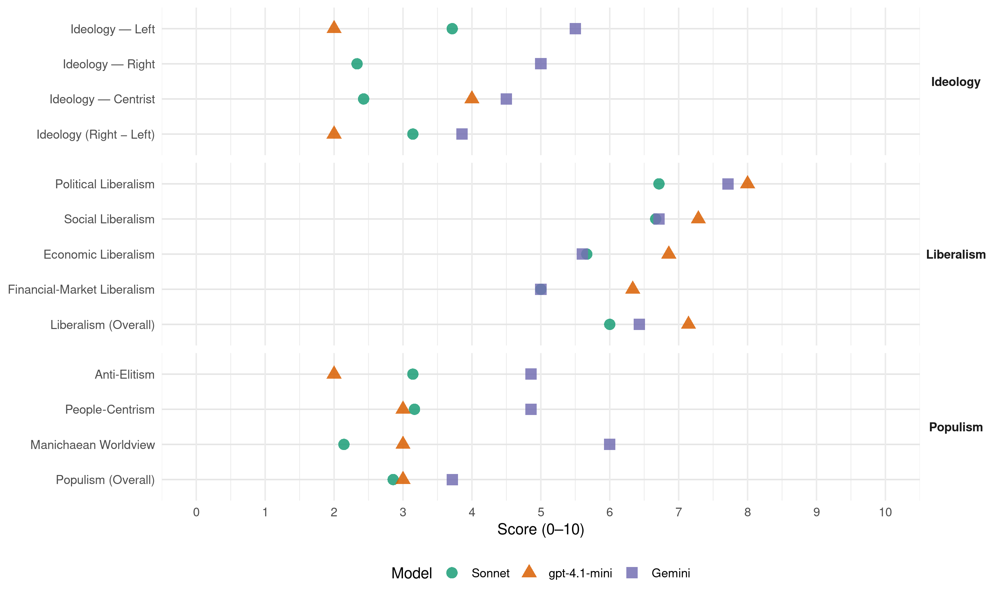

LVŽS (Lithuania, 2016)
manifesto_id 88820_201610
Get full text: This site shows derived annotations and short verbatim quotes only. The full manifesto text is © Manifesto Project / WZB — obtain it via manifesto-project.wzb.eu using the manifesto_id above.
Headline scores
| Dimension | Sonnet | gpt-4.1-mini | Gemini |
|---|---|---|---|
| Populism (Overall) | 2.9 | 3.0 | 3.7 |
| Anti-Elitism | 3.1 | 2.0 | 4.9 |
| People-Centrism | 3.2 | 3.0 | 4.9 |
| Manichaean Worldview | 2.1 | 3.0 | 6.0 |
| Ideology (Right − Left) | 3.1 | 2.0 | 3.9 |
| Liberalism (Overall) | 6.0 | 7.1 | 6.4 |
| Political Liberalism | 6.7 | 8.0 | 7.7 |
| Social Liberalism | 6.7 | 7.3 | 6.7 |
| Economic Liberalism | 5.7 | 6.9 | 5.6 |
| Financial-Market Liberalism | 5.0 | 6.3 | 5.0 |
Evidence per dimension
Economic Liberalism
Gemini · score 5.0 · verified · chunk 1
“darni ekonomika remiasi socialinės rinkos ekonomikos principais”
prioritetinis valstybės dėmesys. Darni ekonomika remiasi socialinės rinkos ekonomikos principais, kurie leidžia atsiskleisti žmonių
Gemini · score 6.0 · verified · chunk 2
“skatinant smulkų ir vidutinį verslą”
aukštos pridėtinės vertės ir į intelektualaus produkto gamybą, skatinant smulkų ir vidutinį verslą bei vidurinę klasę
Gemini · score 5.0 · mixed · chunk 3
“verslas bus skatinamas gerbti viešąjį interesą”
maksimalaus skaidrumo ir nešališkumo bei aktyvaus visuomenės dalyvavimo priimant sprendimus. Verslas bus skatinamas gerbti viešąjį interesą atitinkančius bendruomenių poreikius
Gemini · score 4.0 · verified · chunk 4
“valstybės intervencijos poreikių analize”
Ši organizacija užsiims rinkos stebėjimu, valstybės intervencijos poreikių analize, užtikrins specialios informacijos
Gemini · score 6.0 · verified · chunk 5
“mokesčių politikos nuostatas, kurios skatintų verslą”
Remdamiesi gerąja Vakarų pasaulio patirtimi, formuosime tokias mokesčių politikos nuostatas, kurios skatintų verslą skirti didesnę paramą kultūros bei meno iniciatyvoms.
Gemini · score 4.0 · mixed · chunk 6
“valstybinę monopolinę prekybos alkoholiu sistemą”
Pereinamuoju laikotarpiu prieš įvedant valstybinę monopolinę prekybos alkoholiu sistemą, taikysime sugriežtintą
Gemini · score 7.0 · verified · chunk 7
“skatinti šalies gaminių eksportą ir pažangių”
Siekdami skatinti šalies gaminių eksportą ir pažangių technologijų importą, sieksime vieningos strategijos
gpt-4.1-mini · score 6.0 · verified · chunk 1
“Darnus ekonomika remiasi socialinės rinkos ekonomikos principais, kurie leidžia atsiskleisti žmonių iniciatyvai bei kūrybiškumui”
Darni ekonomika remiasi socialinės rinkos ekonomikos principais, kurie leidžia atsiskleisti žmonių iniciatyvai bei kūrybiškumui ir į ūkio plėtrą įsitraukti visiems piliečiams. Tokioje ekonomikoje valstybės institucijos atlieka harmonizuojantį vaidmenį.
gpt-4.1-mini · score 7.0 · verified · chunk 2
“skatinti smulkų ir vidutinį verslą bei vidurinę klasę”
valstybinė politika, orientuota į aukštos pridėtinės vertės ir į intelektualaus produkto gamybą, skatinanti smulkų ir vidutinį verslą bei vidurinę klasę, ženkliai prisidėtų prie sveikesnės visuomenės.
gpt-4.1-mini · score 7.0 · verified · chunk 3
“ekonomikos augimas turi vykti darnoje su aplinkos kokybe”
Žinoma, be ekonomikos atsigavimo, pramonės augimo yra neįmanoma sukurti gerovės. Kartu pabrėžiame, kad ekonomikos augimas turi vykti darnoje su aplinkos kokybe ir žmonių gerove.
gpt-4.1-mini · score 6.0 · verified · chunk 4
“Skatinsime kolektyvines derybas, nacionaliniu, šakos (sektoriaus) ir įmonių lygiu dalį darbo santykių reguliavimo perkeldami iš įstatymų į kolektyvinius susitarimus”
Ilgalaikėje perspektyvoje mažindami pajamų nelygybę, sieksime pertvarkyti mokesčių sistemą ir įvesti progresinius mokesčius, kai tam bus palanki visuomenės nuomonė. Skatinsime kolektyvines derybas, nacionaliniu, šakos (sektoriaus) ir įmonių lygiu dalį darbo santykių reguliavimo perkeldami iš įstatymų į kolektyvinius susitarimus (streikai, papildomos atostogos).
gpt-4.1-mini · score 7.0 · verified · chunk 5
“Lietuvos valstiečių ir žaliųjų sąjunga – socialinės rinkos ekonomikos šalininkė”
4. Darni ekonomika ir finansai Lietuvos valstiečių ir žaliųjų sąjunga – socialinės rinkos ekonomikos šalininkė. Tokioje ekonomikoje nėra vietos lupikavimui ir monopolijų dominavimui, žmogaus ir gamtos išteklių pereikvojimui.
gpt-4.1-mini · score 7.0 · verified · chunk 6
“Mažinsime juridinių asmenų ir verslo formų teisinę ir mokestinę įvairovę”
…Mažinsime juridinių asmenų ir verslo formų teisinę ir mokestinę įvairovę, nes ji didina galimybes išvengti mokesčių ir brangina sistemos priežiūrą bei administravimą…
gpt-4.1-mini · score 8.0 · verified · chunk 7
“Skatinsime prekybos su JAV augimą, ypatingą dėmesį skirdami lietuviško eksporto augimui”
Skatinsime prekybos su JAV augimą, ypatingą dėmesį skirdami lietuviško eksporto augimui. Ekologiška ir sveika lietuviška produkcija gali ir turi rasti savo kelią į JAV vartotojų namus.
Sonnet · score 5.0 · verified · chunk 1
“socialinės rinkos ekonomikos principais”
Darni ekonomika remiasi socialinės rinkos ekonomikos principais, kurie leidžia atsiskleisti žmonių iniciatyvai bei kūrybiškumui
Sonnet · score 5.0 · verified · chunk 2
“skatinti vietos verslą bei pritraukti”
motyvuotų savivaldybes gerinti verslo aplinką, skatinti vietos verslą bei pritraukti užsienio ir vietos investuotojus
Sonnet · score 5.0 · mixed · chunk 3
“skatinsime tuos verslo subjektus, kurie pelną investuoja”
Privataus verslo keliama tarša neturi būti tvarkoma naudojant viešuosius finansus ir išteklius, skatinsime tuos verslo subjektus, kurie pelną investuoja į naujausias, beatliekines, aplinkai nedarančios žalos technologijas
Sonnet · score 5.0 · mixed · chunk 4
“Darbo santykiuose akcentuosime ne vien liberalizavimą”
Darbo santykiuose akcentuosime ne vien liberalizavimą, o kolektyvines derybas tam, kad didėtų vidutinis atlyginimas
Sonnet · score 5.0 · mixed · chunk 5
“DK liberalizaciją, tačiau ji nėra”
Pasisakome už DK liberalizaciją, tačiau ji nėra pagrindinė darnių darbo santykių prielaida. Darbo santykiuose akcentuosime ne tik individualų darbuotojų lankstumą
Sonnet · score 5.0 · mixed · chunk 6
“Ribosime greitųjų kreditų paslaugų teikimą”
Ribosime greitųjų kreditų paslaugų teikimą, kurios yra žalingos gyventojams, skatina neatsakingą vartojimą bei savo esme yra finansinis lupikavimas.
Sonnet · score 7.0 · verified · chunk 7
“Pritardami JAV ir ES inicijuojamos Transatlantinės prekybos”
Pritardami JAV ir ES inicijuojamos Transatlantinės prekybos ir partnerystės sutarties (TTIP) tikslams, mes laikysimės atsargios pozicijos
Financial-Market Liberalism
Gemini · score 5.0 · verified · chunk 5
“nepakankama komercinių bankų priežiūra”
ekonomikos krizė Lietuvoje, kurios priežastimis greta globalių veiksnių tapo ir neatsakingas viešųjų finansų valdymas bei nepakankama komercinių bankų priežiūra, paliko gilius randus
Gemini · score 3.0 · verified · chunk 6
“Ribosime greitųjų kreditų paslaugų teikimą”
rizikingai veikiančio privataus finansų sektoriaus aplinkoje… Ribosime greitųjų kreditų paslaugų teikimą, kurios yra žalingos
Gemini · score 7.0 · verified · chunk 7
“finansinių rinkų, draudimo, konkurencijos, mokesčių”
įgyvendinant EPBO standartus investicijų, kovos su korupcija, bendrovių valdymo, finansinių rinkų, draudimo, konkurencijos, mokesčių, aplinkos
gpt-4.1-mini · score 6.0 · verified · chunk 5
“Finansinių paslaugų priežiūrą vykdysime sistemiškai ir proaktyviai, ribosime finansinės rizikos perkėlimą gyventojams”
Stiprinsime vartotojų teisių apsaugos institucijų kompetenciją ir išplėsime jų įgaliojimus. Finansinių paslaugų priežiūrą vykdysime sistemiškai ir proaktyviai, ribosime finansinės rizikos perkėlimą gyventojams, ypač būsto paskolų atveju ir uždrausime finansinį lupikavimą.
gpt-4.1-mini · score 6.0 · verified · chunk 6
“Konsoliduosime valstybės kapitalo finansinių įmonių veiklą”
…Konsoliduosime valstybės kapitalo finansinių įmonių veiklą, pavesime jas valdyti Finansų ministerijai… Ribosime greitųjų kreditų paslaugų teikimą… Kredito unijų sistemą pertvarkysime…
gpt-4.1-mini · score 7.0 · verified · chunk 7
“dėl neatliktų darbų įgyvendinant EPBO standartus investicijų, kovos su korupcija, bendrovių valdymo, finansinių rinkų”
Derybos dėl narystės šioje organizacijoje prasidėjo dar 2015 m., o narystė sąlyga yra gero valdymo principų taikymas 21-oje teminėje srityje. Tapti pilnateise EPBO nare Lietuvai iki šiol nepavyko dėl neatliktų darbų įgyvendinant EPBO standartus investicijų, kovos su korupcija, bendrovių valdymo, finansinių rinkų, draudimo, konkurencijos, mokesčių,
Sonnet · score 5.0 · verified · chunk 3
“Skatinsime bankų, draudimo institucijų dalyvavimą”
Tokie fondai turi būti kuriami privačia iniciatyva, jų veikla – pagrįsta privačiomis įmokomis, kritiniais atvejais prisidedant ir valstybei. Skatinsime bankų, draudimo institucijų dalyvavimą jų veikloje
Sonnet · score 4.0 · verified · chunk 5
“nepakankama komercinių bankų priežiūra”
neatsakingas viešųjų finansų valdymas bei nepakankama komercinių bankų priežiūra, paliko gilius randus šalies gyvenime
Sonnet · score 6.0 · verified · chunk 7
“finansinių rinkų, draudimo, konkurencijos, mokesčių”
neatliktų darbų įgyvendinant EPBO standartus investicijų, kovos su korupcija, bendrovių valdymo, finansinių rinkų, draudimo, konkurencijos, mokesčių
Political Liberalism
Gemini · score 8.0 · verified · chunk 1
“Lietuvos, kaip Vakarų demokratinio pasaulio dalies, statusą”
narystę NATO bei Europos Sąjungoje ir Lietuvos, kaip Vakarų demokratinio pasaulio dalies, statusą; įveikėme pereinamojo laikotarpio
Gemini · score 8.0 · verified · chunk 2
“atvira ir demokratinė visuomenė”
vienodos sąlygos visų kartų ir tos pačios kartos atstovams; atvira ir demokratinė visuomenė; piliečių įtraukimas ir
Gemini · score 7.0 · verified · chunk 3
“atvira ir demokratinė visuomenė; piliečių įtraukimas”
vienodos sąlygos visų kartų ir tos pačios kartos atstovams; atvira ir demokratinė visuomenė; piliečių įtraukimas ir jų dalyvavimas; įmonių socialinės atsakomybės skatinimas
Gemini · score 7.0 · verified · chunk 4
“teisinėmis priemonėmis užtikrinti konstitucines Lietuvos piliečių teises”
Tam būtina teisinėmis priemonėmis užtikrinti konstitucines Lietuvos piliečių teises į kultūros prieinamumą.
Gemini · score 8.0 · verified · chunk 5
“žmogaus teisių deklaracijos skelbiamas žodžio, tikėjimo”
Lietuva pripažįsta visuotinės žmogaus teisių deklaracijos skelbiamas žodžio, tikėjimo, mokslinės ir kultūrinės raiškos laisvių vertybes
Gemini · score 8.0 · verified · chunk 6
“gyventi pagal teisės viršenybės principą”
savo Konstitucijoje įsipareigojau gyventi pagal teisės viršenybės principą – ta pačia teise vienodai saistyti
Gemini · score 8.0 · verified · chunk 7
“demokratijos, gero valdymo principų ir pagarbos”
Laikomės nuostatos, jog stabilumo ir saugumo erdvei stiprėti labai padeda demokratijos, gero valdymo principų ir pagarbos žmogaus teisėms ir laisvėms plėtra.
gpt-4.1-mini · score 8.0 · verified · chunk 1
“Lietuvos narystę NATO bei Europos Sąjungoje ir Lietuvos, kaip Vakarų demokratinio pasaulio dalies, statusą”
Per 26 metus Lietuva pasiekė įspūdingų laimėjimų: atkūrėme valstybės Nepriklausomybę; įtvirtinome gyvybiškai svarbią Lietuvos narystę NATO bei Europos Sąjungoje ir Lietuvos, kaip Vakarų demokratinio pasaulio dalies, statusą; įveikėme pereinamojo laikotarpio, o vėliau – netvarios ūkio plėtros ir globalios ekonomikos svyravimų sukeltus išbandymus.
gpt-4.1-mini · score 8.0 · verified · chunk 2
“demokratinė visuomenė; piliečių įtraukimas ir jų dalyvavimas”
Darnaus vystymosi, taip pat ir sąjungos politikos įgyvendinimas remiasi šiomis darnaus vystymosi nuostatomis: pagrindinių teisių rėmimas ir apsauga; vienodos sąlygos visų kartų ir tos pačios kartos atstovams; atvira ir demokratinė visuomenė; piliečių įtraukimas ir jų dalyvavimas; įmonių socialinės atsakomybės skatinimas; politikos nuoseklumas, politikos integralumas; kompetencija ir naudojimasis geriausiomis turimomis žiniomis ir technologijomis; atsargumo principas, „teršėjas moka“ principas.
gpt-4.1-mini · score 7.0 · verified · chunk 3
“Lietuvos Respublikos Konstitucijos nuostatas”
Sieksime optimizuoti šalies regioninį suskirstymą. Lietuvos Respublikos Konstitucijos nuostatas, svarstysime galimybę nuo naujojo ES finansinio laikotarpio pradžios (2021 m.) mažinti šalies apskričių skaičių, pasiekiant ES lygmeniu mažiausio efektyvaus regiono rodikliu laikomą NUTS 2 standartą.
gpt-4.1-mini · score 8.0 · verified · chunk 4
“pripažįsta visuotinės žmogaus teisių deklaracijos skelbiamas žodžio, tikėjimo, mokslinės ir kultūrinės raiškos laisvių vertybes”
Būdama Jungtinių Tautų, ES, NATO ir kitų tarptautinių organizacijų narė, Lietuva pripažįsta visuotinės žmogaus teisių deklaracijos skelbiamas žodžio, tikėjimo, mokslinės ir kultūrinės raiškos laisvių vertybes, tarptautines kultūros puoselėjimo ir išsaugojimo vertybes bei principus.
gpt-4.1-mini · score 8.0 · verified · chunk 5
“Lietuva pripažįsta visuotinės žmogaus teisių deklaracijos skelbiamas žodžio, tikėjimo, mokslinės ir kultūrinės raiškos laisvių vertybes”
Būdama Jungtinių Tautų, ES, NATO ir kitų tarptautinių organizacijų narė, Lietuva pripažįsta visuotinės žmogaus teisių deklaracijos skelbiamas žodžio, tikėjimo, mokslinės ir kultūrinės raiškos laisvių vertybes, tarptautines kultūros puoselėjimo ir išsaugojimo vertybes bei principus.
gpt-4.1-mini · score 8.0 · verified · chunk 6
“Teisės viešpatavimas reiškia, kad valdžią riboja teisė”
…Teisės viešpatavimas reiškia, kad valdžią riboja teisė, visos valstybės valdžią įgyvendinančios institucijos turi veikti remdamosi teise ir paklusdamos teisei…
gpt-4.1-mini · score 9.0 · verified · chunk 7
“demokratijos, gero valdymo principų ir pagarbos žmogaus teisėms”
Laikomės nuostatos, jog stabilumo ir saugumo erdvei stiprėti labai padeda demokratijos, gero valdymo principų ir pagarbos žmogaus teisėms ir laisvėms plėtra. Mes esame pasirengę išnaudoti turimą potencialą, siekdami šių kertinių užsienio politikos uždavinių ir tikslų įgyvendinimo:
Sonnet · score 6.0 · verified · chunk 1
“skaidrumo ir atskaitomybės, valstybės subsidiarumo”
visų valstybės valdžios grandžių priimamų sprendimų skaidrumo ir atskaitomybės, valstybės subsidiarumo ir piliečių solidarumo
Sonnet · score 7.0 · verified · chunk 2
“atvira ir demokratinė visuomenė”
pagrindinių teisių rėmimas ir apsauga; vienodos sąlygos visų kartų; atvira ir demokratinė visuomenė; piliečių įtraukimas
Sonnet · score 7.0 · verified · chunk 3
“atvira ir demokratinė visuomenė”
darnaus vystymosi nuostatomis: pagrindinių teisių rėmimas ir apsauga; vienodos sąlygos visų kartų ir tos pačios kartos atstovams; atvira ir demokratinė visuomenė; piliečių įtraukimas ir jų dalyvavimas
Sonnet · score 6.0 · verified · chunk 4
“demokratiška, atvira, visavertė, ryžtinga valstybės politika”
būtina subalansuota, demokratiška, atvira, visavertė, ryžtinga valstybės politika kultūros srityje, įtvirtinanti aiškius ir stabilius valstybės įsipareigojimus kultūrai
Sonnet · score 6.0 · verified · chunk 5
“demokratiška, atvira, visavertė”
būtina subalansuota, demokratiška, atvira, visavertė, ryžtinga valstybės politika kultūros srityje, įtvirtinanti aiškius ir stabilius valstybės įsipareigojimus kultūrai
Sonnet · score 7.0 · verified · chunk 6
“Turime ginti, puoselėti ir stiprinti demokratiją”
Teisė kartais vis dar yra pasyvus įrankis bet kokios galiai legalizuoti. Turime ginti, puoselėti ir stiprinti demokratiją Lietuvoje.
Sonnet · score 8.0 · verified · chunk 7
“demokratijos, gero valdymo principų ir pagarbos žmogaus teisėms”
stabilumo ir saugumo erdvei stiprėti labai padeda demokratijos, gero valdymo principų ir pagarbos žmogaus teisėms ir laisvėms plėtra
Liberalism (Overall)
Gemini · score 5.0 · verified · chunk 1
“darni ekonomika remiasi socialinės rinkos ekonomikos principais”
prioritetinis valstybės dėmesys. Darni ekonomika remiasi socialinės rinkos ekonomikos principais, kurie leidžia atsiskleisti žmonių
Gemini · score 7.0 · verified · chunk 2
“atvira ir demokratinė visuomenė”
vienodos sąlygos visų kartų ir tos pačios kartos atstovams; atvira ir demokratinė visuomenė; piliečių įtraukimas ir
Gemini · score 6.0 · verified · chunk 3
“atvira ir demokratinė visuomenė; piliečių įtraukimas”
vienodos sąlygos visų kartų ir tos pačios kartos atstovams; atvira ir demokratinė visuomenė; piliečių įtraukimas ir jų dalyvavimas; įmonių socialinės atsakomybės skatinimas
Gemini · score 6.0 · verified · chunk 4
“teisinėmis priemonėmis užtikrinti konstitucines Lietuvos piliečių teises”
Tam būtina teisinėmis priemonėmis užtikrinti konstitucines Lietuvos piliečių teises į kultūros prieinamumą.
Gemini · score 7.0 · verified · chunk 5
“žmogaus teisių deklaracijos skelbiamas žodžio, tikėjimo”
Lietuva pripažįsta visuotinės žmogaus teisių deklaracijos skelbiamas žodžio, tikėjimo, mokslinės ir kultūrinės raiškos laisvių vertybes
Gemini · score 6.0 · verified · chunk 6
“gyventi pagal teisės viršenybės principą”
savo Konstitucijoje įsipareigojau gyventi pagal teisės viršenybės principą – ta pačia teise vienodai saistyti
Gemini · score 8.0 · verified · chunk 7
“demokratijos, gero valdymo principų ir pagarbos”
Laikomės nuostatos, jog stabilumo ir saugumo erdvei stiprėti labai padeda demokratijos, gero valdymo principų ir pagarbos žmogaus teisėms ir laisvėms plėtra.
gpt-4.1-mini · score 7.0 · verified · chunk 1
“Lietuvos narystę NATO bei Europos Sąjungoje ir Lietuvos, kaip Vakarų demokratinio pasaulio dalies, statusą”
Per 26 metus Lietuva pasiekė įspūdingų laimėjimų: atkūrėme valstybės Nepriklausomybę; įtvirtinome gyvybiškai svarbią Lietuvos narystę NATO bei Europos Sąjungoje ir Lietuvos, kaip Vakarų demokratinio pasaulio dalies, statusą; įveikėme pereinamojo laikotarpio, o vėliau – netvarios ūkio plėtros ir globalios ekonomikos svyravimų sukeltus išbandymus.
gpt-4.1-mini · score 7.0 · verified · chunk 2
“atvira ir demokratinė visuomenė; piliečių įtraukimas ir jų dalyvavimas”
Darnaus vystymosi, taip pat ir sąjungos politikos įgyvendinimas remiasi šiomis darnaus vystymosi nuostatomis: pagrindinių teisių rėmimas ir apsauga; vienodos sąlygos visų kartų ir tos pačios kartos atstovams; atvira ir demokratinė visuomenė; piliečių įtraukimas ir jų dalyvavimas; įmonių socialinės atsakomybės skatinimas; politikos nuoseklumas, politikos integralumas; kompetencija ir naudojimasis geriausiomis turimomis žiniomis ir technologijomis; atsargumo principas, „teršėjas moka“ principas.
gpt-4.1-mini · score 7.0 · verified · chunk 3
“ekonomikos augimas turi vykti darnoje su aplinkos kokybe”
Žinoma, be ekonomikos atsigavimo, pramonės augimo yra neįmanoma sukurti gerovės. Kartu pabrėžiame, kad ekonomikos augimas turi vykti darnoje su aplinkos kokybe ir žmonių gerove.
gpt-4.1-mini · score 7.0 · verified · chunk 4
“pripažįsta visuotinės žmogaus teisių deklaracijos skelbiamas žodžio, tikėjimo, mokslinės ir kultūrinės raiškos laisvių vertybes”
Būdama Jungtinių Tautų, ES, NATO ir kitų tarptautinių organizacijų narė, Lietuva pripažįsta visuotinės žmogaus teisių deklaracijos skelbiamas žodžio, tikėjimo, mokslinės ir kultūrinės raiškos laisvių vertybes, tarptautines kultūros puoselėjimo ir išsaugojimo vertybes bei principus.
gpt-4.1-mini · score 7.0 · verified · chunk 5
“Lietuva pripažįsta visuotinės žmogaus teisių deklaracijos skelbiamas žodžio, tikėjimo, mokslinės ir kultūrinės raiškos laisvių vertybes”
Būdama Jungtinių Tautų, ES, NATO ir kitų tarptautinių organizacijų narė, Lietuva pripažįsta visuotinės žmogaus teisių deklaracijos skelbiamas žodžio, tikėjimo, mokslinės ir kultūrinės raiškos laisvių vertybes, tarptautines kultūros puoselėjimo ir išsaugojimo vertybes bei principus.
gpt-4.1-mini · score 7.0 · verified · chunk 6
“Teisės viešpatavimas reiškia, kad valdžią riboja teisė”
…Teisės viešpatavimas reiškia, kad valdžią riboja teisė, visos valstybės valdžią įgyvendinančios institucijos turi veikti remdamosi teise ir paklusdamos teisei…
gpt-4.1-mini · score 8.0 · verified · chunk 7
“demokratijos, gero valdymo principų ir pagarbos žmogaus teisėms”
Laikomės nuostatos, jog stabilumo ir saugumo erdvei stiprėti labai padeda demokratijos, gero valdymo principų ir pagarbos žmogaus teisėms ir laisvėms plėtra. Mes esame pasirengę išnaudoti turimą potencialą, siekdami šių kertinių užsienio politikos uždavinių ir tikslų įgyvendinimo:
Sonnet · score 5.0 · mixed · chunk 1
“skaidrumo ir atskaitomybės, valstybės subsidiarumo”
visų valstybės valdžių priimamų sprendimų skaidrumo ir atskaitomybės, valstybės subsidiarumo ir piliečių solidarumo
Sonnet · score 6.0 · verified · chunk 2
“atvira ir demokratinė visuomenė”
pagrindinių teisių rėmimas ir apsauga; atvira ir demokratinė visuomenė; piliečių įtraukimas ir jų dalyvavimas
Sonnet · score 6.0 · verified · chunk 3
“atvira ir demokratinė visuomenė”
darnaus vystymosi nuostatomis: pagrindinių teisių rėmimas ir apsauga; vienodos sąlygos visų kartų ir tos pačios kartos atstovams; atvira ir demokratinė visuomenė
Sonnet · score 6.0 · verified · chunk 4
“nepriklausomai nuo tautybės, lyties, amžiaus, religijos”
kiekvienam Lietuvos piliečiui, nepriklausomai nuo tautybės, lyties, amžiaus, religijos, socialinės padėties, užtikrinti lygiavertes sąlygas
Sonnet · score 5.0 · verified · chunk 5
“socialinės rinkos ekonomikos šalininkė”
Lietuvos valstiečių ir žaliųjų sąjunga – socialinės rinkos ekonomikos šalininkė. Tokioje ekonomikoje nėra vietos lupikavimui ir monopolijų dominavimui
Sonnet · score 6.0 · verified · chunk 6
“Turime ginti, puoselėti ir stiprinti demokratiją”
Turime ginti, puoselėti ir stiprinti demokratiją Lietuvoje. Pavyzdžiui, laisvosios rinkos pagrindinio principo…
Sonnet · score 7.0 · verified · chunk 7
“demokratijos, gero valdymo principų ir pagarbos žmogaus teisėms”
stabilumo ir saugumo erdvei stiprėti labai padeda demokratijos, gero valdymo principų ir pagarbos žmogaus teisėms ir laisvėms plėtra
Anti-Elitism
Gemini · score 3.0 · verified · chunk 1
“sveikatos argumentai nusileisdavo trumparegiškiems tabako ar alkoholio verslo interesams”
sveikatos visose politikose politika geriausiu atveju yra tik deklaruojama, o sveikatos argumentai nusileisdavo trumparegiškiems tabako ar alkoholio verslo interesams. Savo programa siekiame
Gemini · score 5.0 · verified · chunk 2
“panaikindami privilegiją politinėms partijoms”
organizacijoms kartu panaikindami privilegiją politinėms partijoms gauti papildomą 1 proc.
Gemini · score 6.0 · verified · chunk 3
“vyriausybės padarė labai nedaug decentralizuodamos”
Lietuva prieš du su puse dešimtmečio paveldėjo labai centralizuotą šalies valdymo sistemą. Per šį laikotarpį šalį valdžiusios vyriausybės padarė labai nedaug decentralizuodamos ir dekoncentruodamos valdymą.
Gemini · score 5.0 · verified · chunk 4
“ignoruojant gerovės pasiskirstymo tarp šalies regionų”
Ilgą laiką visoms šalies vyriausybėms ignoruojant gerovės pasiskirstymo tarp šalies regionų bei savivaldybių lygio didėjimo tendencijas
Gemini · score 4.0 · verified · chunk 5
“neatsakingiems politikams manipuliuoti finansais”
Dabartinis viešųjų finansų rodiklių reglamentavimas ir jo priežiūra Lietuvoje ir visoje ES yra nepakankami. Tai sudaro sąlygas neatsakingiems politikams manipuliuoti finansais, prisideda prie krizės Lietuvoje ištakų
Gemini · score 7.0 · verified · chunk 6
“nepakankamos politikų ir aukštųjų valstybės pareigūnų kompetencijos”
Taip yra dėl nepakankamos politikų ir aukštųjų valstybės pareigūnų kompetencijos ir atsakomybės, trumpalaikių paskatų
Gemini · score 4.0 · verified · chunk 7
“tapti mažiau biurokratiška, labiau dinamiška”
ES privalo keistis, tapti mažiau biurokratiška, labiau dinamiška, demokratiška, esančia arčiau žmonių.
gpt-4.1-mini · score 2.0 · verified · chunk 6
“valstybės institucijomis tampa pasipelnymo simboliu”
…kai valdžia, viešųjų institucijų įgaliojimai tampa pasipelnymo simboliu. Lietuvoje atsiranda pilkosios zonos, kuriose nebaudžiamai gali veikti stambios politinės korupcijos lyderiai…
Sonnet · score 2.0 · verified · chunk 1
“trumparegiškiems tabako ar alkoholio verslo interesams”
sveikatos argumentai nusileisdavo trumparegiškiems tabako ar alkoholio verslo interesams. Savo programa siekiame
Sonnet · score 2.0 · verified · chunk 2
“politinio ryžto trūkumo ir medikų pasipriešinimo”
dėl politinio ryžto trūkumo ir medikų pasipriešinimo netgi žengta atgal. Į pirminę sveikatos priežiūros grandį gražinami pediatrai
Sonnet · score 3.0 · verified · chunk 3
“biurokratijos žinioje, o demokratiškai išrinkti politikai”
nacionalinė darnaus vystymosi strategija dažnai lieka valstybės tarnautojų, biurokratijos žinioje, o demokratiškai išrinkti politikai bei rinkėjai labai menkai įtraukiami į jos įgyvendinimą
Sonnet · score 3.0 · verified · chunk 4
“visoms šalies vyriausybėms ignoruojant gerovės pasiskirstymo”
Ilgą laiką visoms šalies vyriausybėms ignoruojant gerovės pasiskirstymo tarp šalies regionų bei savivaldybių lygio didėjimo tendencijas
Sonnet · score 4.0 · verified · chunk 5
“trumpalaikiai ir grupiniai interesai”
Politikoje vyrauja trumpalaikiai ir grupiniai interesai, neturintys nieko bendra su ilgalaikiais valstybės ekonominės ir socialinės plėtros poreikiais
Sonnet · score 6.0 · verified · chunk 6
“politikų piktnaudžiavimo pareigomis bei mokesčių vengimo”
Prie to prisideda ir politikų piktnaudžiavimo pareigomis bei mokesčių vengimo ar neatsakingo jų deklaravimo pavyzdžiai, jau nekalbant apie politinės korupcijos atvejus.
Sonnet · score 2.0 · verified · chunk 7
“ES privalo keistis, tapti mažiau biurokratiška”
Mes kritikuojame kai kuriuos ES sprendimus… ES privalo keistis, tapti mažiau biurokratiška, labiau dinamiška, demokratiška
Ideology — Centrist
Gemini · score 3.0 · verified · chunk 1
“visų Lietuvos piliečių meilė Tėvynei”
Nepriklausomybę stiprintų ne tik narystė transatlantinėse organizacijose, bet ir visų Lietuvos piliečių meilė Tėvynei, noras dėl jos dirbti
Gemini · score 5.0 · verified · chunk 2
“tik patys piliečiai geriausiai gali nuspręsti”
savivaldos chartijos principų, mes manome, jog tik patys piliečiai geriausiai gali nuspręsti, kokioje savivaldybėje jie
Gemini · score 5.0 · verified · chunk 3
“tik patys piliečiai geriausiai gali nuspręsti”
Laikydamiesi Europos vietos savivaldos chartijos principų, mes manome, jog tik patys piliečiai geriausiai gali nuspręsti, kokioje savivaldybėje jie pageidauja gyventi.
Gemini · score 4.0 · verified · chunk 5
“neatsakingiems politikams manipuliuoti finansais”
Dabartinis viešųjų finansų rodiklių reglamentavimas ir jo priežiūra Lietuvoje ir visoje ES yra nepakankami. Tai sudaro sąlygas neatsakingiems politikams manipuliuoti finansais, prisideda prie krizės Lietuvoje ištakų
Gemini · score 6.0 · verified · chunk 6
“atkurti pasitikėjimą valstybe, teise ir jos institucijomis”
atskirti ją nuo siaurų grupių, atkurti pasitikėjimą valstybe, teise ir jos institucijomis, užtikrinti Konstitucijos veikimą
Gemini · score 4.0 · verified · chunk 7
“esančia arčiau žmonių”
tapti mažiau biurokratiška, labiau dinamiška, demokratiška, esančia arčiau žmonių. Europai reikia energingų
gpt-4.1-mini · score 4.0 · verified · chunk 6
“Lietuvos valstybę kuria Tauta. Suverenitetas priklauso Tautai”
…Įgyvendinsime Lietuvos Respublikos Konstitucijos nuostatą kad „Lietuvos valstybę kuria Tauta. Suverenitetas priklauso Tautai“. Todėl mes įsipareigojame…
Sonnet · score 2.0 · verified · chunk 1
“visų Lietuvos piliečių meilė Tėvynei”
valstybės Nepriklausomybę stiprintų ne tik narystė transatlantinėse organizacijose, bet ir visų Lietuvos piliečių meilė Tėvynei
Sonnet · score 2.0 · verified · chunk 2
“piliečių įtraukimas ir jų dalyvavimas”
atvira ir demokratinė visuomenė; piliečių įtraukimas ir jų dalyvavimas; įmonių socialinės atsakomybės skatinimas
Sonnet · score 2.0 · verified · chunk 3
“visuomenės įgalinimo dalyvauti viešajame gyvenime”
ženkliai prisidėtų prie vietos potencialo išnaudojimo, visuomenės įgalinimo dalyvauti viešajame gyvenime, paskatintų pasitikėjimą valstybe
Sonnet · score 2.0 · verified · chunk 4
“Nacionalinis politinių partijų ir verslo susitarimas”
Nacionalinis politinių partijų ir verslo susitarimas dėl atlyginimų didinimo. Verslas bus suinteresuotas didinti atlyginimus tik tada, jei konkurentai darys tą patį
Sonnet · score 3.0 · verified · chunk 5
“profesionalumo, sistemiškumo ir kompleksiškumo principais”
LVŽS požiūris į ekonomiką remiasi profesionalumo, sistemiškumo ir kompleksiškumo principais
Sonnet · score 4.0 · verified · chunk 6
“skaidrią, atvirą politiką”
mes įsipareigojame vykdyti skaidrią, atvirą politiką, tam kad sugražintume piliečių pasitikėjimą savo pačių galiomis
Sonnet · score 2.0 · verified · chunk 7
“pasisakome prieš ES priverstinę federalizaciją”
pasisakome už aktyvią Lietuvoje poziciją Europos Sąjungoje… bet pasisakome prieš ES priverstinę federalizaciją
Ideology — Left
Gemini · score 6.0 · verified · chunk 4
“mažindami pajamų nelygybę, sieksime pertvarkyti mokesčių sistemą”
Ilgalaikėje perspektyvoje mažindami pajamų nelygybę, sieksime pertvarkyti mokesčių sistemą ir įvesti progresinius mokesčius
Gemini · score 5.0 · verified · chunk 6
“sumažinti su darbo santykiais susijusių pajamų mokesčių naštą”
atsiras galimybė keliais procentiniais punktais sumažinti su darbo santykiais susijusių pajamų mokesčių naštą gaunantiems mažas ir vidutines
gpt-4.1-mini · score 2.0 · verified · chunk 6
“Mažinsime juridinių asmenų ir verslo formų teisinę ir mokestinę įvairovę”
…Mažinsime juridinių asmenų ir verslo formų teisinę ir mokestinę įvairovę, nes ji didina galimybes išvengti mokesčių ir brangina sistemos priežiūrą bei administravimą…
Sonnet · score 3.0 · verified · chunk 1
“socialinės rinkos ekonomikos principais”
Darni ekonomika remiasi socialinės rinkos ekonomikos principais, kurie leidžia atsiskleisti žmonių iniciatyvai
Sonnet · score 3.0 · verified · chunk 2
“Kelsime visų grandžių medicinos darbuotojų darbo užmokestį”
Kelsime visų grandžių medicinos darbuotojų darbo užmokestį. Tam numatome peržiūrėti darbo užmokesčio apskaičiavimo tvarką
Sonnet · score 3.0 · verified · chunk 3
“privatus sektorius nepateisino vilčių”
Kainų analizė rodo, kad daugeliu atvejų privatus sektorius nepateisino vilčių, t. y. nesumažino šilumos kainų, o kai kuriais atvejais tiesiog piktnaudžiavo užimama padėtimi
Sonnet · score 6.0 · verified · chunk 4
“progresinius mokesčius”
sieksime pertvarkyti mokesčių sistemą ir įvesti progresinius mokesčius, kai tam bus palanki visuomenės nuomonė
Sonnet · score 5.0 · verified · chunk 5
“socialinės rinkos ekonomikos šalininkė”
Lietuvos valstiečių ir žaliųjų sąjunga – socialinės rinkos ekonomikos šalininkė. Tokioje ekonomikoje nėra vietos lupikavimui ir monopolijų dominavimui
Sonnet · score 5.0 · verified · chunk 6
“mažas ir vidutines darbo pajamas gaunantiems gyventojams”
atsiras galimybė keliais procentiniais punktais sumažinti su darbo santykiais susijusių pajamų mokesčių naštą gaunantiems mažas ir vidutines darbo pajamas gyventojams.
Sonnet · score 1.0 · verified · chunk 7
“Lietuvos ūkininkų diskriminacijos mokant mažesnes išmokas”
Mes kritikuojame kai kuriuos ES sprendimus, pvz., dėl Lietuvos ūkininkų diskriminacijos mokant mažesnes išmokas nei ES vidurkis
Ideology (Right − Left)
Gemini · score 2.0 · verified · chunk 1
“visų Lietuvos piliečių meilė Tėvynei”
Nepriklausomybę stiprintų ne tik narystė transatlantinėse organizacijose, bet ir visų Lietuvos piliečių meilė Tėvynei, noras dėl jos dirbti
Gemini · score 4.0 · verified · chunk 2
“tik patys piliečiai geriausiai gali nuspręsti”
savivaldos chartijos principų, mes manome, jog tik patys piliečiai geriausiai gali nuspręsti, kokioje savivaldybėje jie
Gemini · score 4.0 · verified · chunk 3
“tik patys piliečiai geriausiai gali nuspręsti”
Laikydamiesi Europos vietos savivaldos chartijos principų, mes manome, jog tik patys piliečiai geriausiai gali nuspręsti, kokioje savivaldybėje jie pageidauja gyventi.
Gemini · score 5.0 · verified · chunk 4
“mažindami pajamų nelygybę, sieksime pertvarkyti mokesčių sistemą”
Ilgalaikėje perspektyvoje mažindami pajamų nelygybę, sieksime pertvarkyti mokesčių sistemą ir įvesti progresinius mokesčius
Gemini · score 3.0 · verified · chunk 5
“neatsakingiems politikams manipuliuoti finansais”
Dabartinis viešųjų finansų rodiklių reglamentavimas ir jo priežiūra Lietuvoje ir visoje ES yra nepakankami. Tai sudaro sąlygas neatsakingiems politikams manipuliuoti finansais, prisideda prie krizės Lietuvoje ištakų
Gemini · score 6.0 · verified · chunk 6
“atkurti pasitikėjimą valstybe, teise ir jos institucijomis”
atskirti ją nuo siaurų grupių, atkurti pasitikėjimą valstybe, teise ir jos institucijomis, užtikrinti Konstitucijos veikimą
Gemini · score 3.0 · verified · chunk 7
“esančia arčiau žmonių”
tapti mažiau biurokratiška, labiau dinamiška, demokratiška, esančia arčiau žmonių. Europai reikia energingų
gpt-4.1-mini · score 2.0 · verified · chunk 6
“valstybės institucijomis tampa pasipelnymo simboliu”
…kai valdžia, viešųjų institucijų įgaliojimai tampa pasipelnymo simboliu. Lietuvoje atsiranda pilkosios zonos, kuriose nebaudžiamai gali veikti stambios politinės korupcijos lyderiai…
Sonnet · score 3.0 · verified · chunk 1
“vyro ir moters santuoka grindžiama šeima”
Lietuvos valstiečių ir žaliųjų sąjunga visada nuosekliai pripažino, kad vyro ir moters santuoka grindžiama šeima yra patikimiausias institutas
Sonnet · score 2.0 · verified · chunk 2
“Kelsime visų grandžių medicinos darbuotojų darbo užmokestį”
Kelsime visų grandžių medicinos darbuotojų darbo užmokestį. Tam numatome peržiūrėti darbo užmokesčio apskaičiavimo tvarką
Sonnet · score 2.0 · verified · chunk 3
“privatus sektorius nepateisino vilčių”
Kainų analizė rodo, kad daugeliu atvejų privatus sektorius nepateisino vilčių, t. y. nesumažino šilumos kainų
Sonnet · score 5.0 · verified · chunk 4
“progresinius mokesčius”
sieksime pertvarkyti mokesčių sistemą ir įvesti progresinius mokesčius, kai tam bus palanki visuomenės nuomonė
Sonnet · score 4.0 · verified · chunk 5
“socialinės rinkos ekonomikos šalininkė”
Lietuvos valstiečių ir žaliųjų sąjunga – socialinės rinkos ekonomikos šalininkė. Tokioje ekonomikoje nėra vietos lupikavimui ir monopolijų dominavimui
Sonnet · score 4.0 · verified · chunk 6
“mažas ir vidutines darbo pajamas gaunantiems gyventojams”
atsiras galimybė keliais procentiniais punktais sumažinti su darbo santykiais susijusių pajamų mokesčių naštą gaunantiems mažas ir vidutines darbo pajamas gyventojams.
Sonnet · score 2.0 · verified · chunk 7
“pasisakome prieš ES priverstinę federalizaciją”
pasisakome už aktyvią Lietuvoje poziciją Europos Sąjungoje… bet pasisakome prieš ES priverstinę federalizaciją
Ideology — Right
Gemini · score 5.0 · verified · chunk 4
“per kultūros paveldo ir šiuolaikinės kultūros pažinimą ugdysime tautinę savimonę”
Per kultūros paveldo ir šiuolaikinės kultūros pažinimą ugdysime tautinę savimonę, stiprinsime ryšius su gimtine
Sonnet · score 4.0 · verified · chunk 1
“vyro ir moters santuoka grindžiama šeima”
Lietuvos valstiečių ir žaliųjų sąjunga visada nuosekliai pripažino, kad vyro ir moters santuoka grindžiama šeima yra patikimiausias institutas
Sonnet · score 1.0 · verified · chunk 3
“etnines tradicijas suformavus 2–3 naujus regionus”
Lietuvoje panaudojant europinę ir gerąją pasaulinę praktiką bei puoselėjant etnines tradicijas suformavus 2–3 naujus regionus
Sonnet · score 1.0 · verified · chunk 4
“lietuvių baltiškoji ir europinė krikščioniškoji tradicijos”
jungiasi lietuvių baltiškoji ir europinė krikščioniškoji tradicijos, paveldas, prigimtinės kultūros formos
Sonnet · score 3.0 · verified · chunk 5
“nacionalinį kultūros paveldą”
Lietuvos valstybės kultūros politikos pagrindinis tikslas – išsaugoti nacionalinį kultūros paveldą, jį prasmingai ir įtaigiai aktualizuoti
Sonnet · score 2.0 · verified · chunk 6
“Smerkiame Rusijos agresiją prieš Ukrainą”
Smerkiame Rusijos agresiją prieš Ukrainą, kategoriškai nesutiksime su branduolinės energetikos objektų statyba šalies pasienyje
Sonnet · score 3.0 · verified · chunk 7
“Smerkiame Rusijos agresiją prieš Ukrainą”
Smerkiame Rusijos agresiją prieš Ukrainą, kategoriškai nesutiksime su branduolinės energetikos objektų statyba šalies pasienyje
Manichaean Worldview
Gemini · score 6.0 · verified · chunk 6
“sustabdyti valdžios atotrūkį nuo žmonių, atskirti ją nuo siaurų grupių”
Mūsų užduotis – sustabdyti valdžios atotrūkį nuo žmonių, atskirti ją nuo siaurų grupių, atkurti pasitikėjimą valstybe
gpt-4.1-mini · score 3.0 · verified · chunk 6
“korupcija negali būti toleruojama valstybės politinėje ir administracinėje sistemoje”
…Korupcija negali būti toleruojama valstybės politinėje ir administracinėje sistemoje, nes kai nešvarūs pinigai nustelbia ar iškraipo piliečių valią…
Sonnet · score 2.0 · verified · chunk 1
“sveikatos argumentai nusileisdavo trumparegiškiems”
geriausiu atveju yra tik deklaruojama, o sveikatos argumentai nusileisdavo trumparegiškiems tabako ar alkoholio verslo interesams
Sonnet · score 1.0 · verified · chunk 2
“nepaisant akivaizdžių įrodymų”
nepaisant akivaizdžių įrodymų, net šaliai atsidūrus dėl tokio gausaus alkoholio vartojimo kritinėje situacijoje, nepavyksta priimti
Sonnet · score 2.0 · verified · chunk 3
“urbanistai, nepaisydami teisinių reikalavimų, tarnauja”
Sieksime įveikti dabartinę ydingą praktiką, kai urbanistai, nepaisydami teisinių reikalavimų, tarnauja tik greitu pelnu suinteresuoto užsakovo norams
Sonnet · score 2.0 · verified · chunk 4
“nusivylusių valstybe, jos ateitimi skaičiaus”
Tačiau jokia statistika neatspindi nusivylusių valstybe, jos ateitimi skaičiaus. Tokia padėtis, susiklosčiusi tiek dėl ekonominės, tiek dėl socialinės politikos nesėkmių
Sonnet · score 2.0 · verified · chunk 5
“neatsakingas viešųjų finansų valdymas”
2009–2010 m. ekonomikos krizė Lietuvoje, kurios priežastimis greta globalių veiksnių tapo ir neatsakingas viešųjų finansų valdymas bei nepakankama komercinių bankų priežiūra
Sonnet · score 4.0 · verified · chunk 6
“laisvosios rinkos pagrindinio principo… sureikšminimas”
laisvosios rinkos pagrindinio principo (pvz., laissez faire – leiskite veikti) ir liberaliosios doktrinos sureikšminimas ir interpretacija pavertė valstybę vien tik stambių įtakos grupių įkaite
Sonnet · score 2.0 · verified · chunk 7
“antieuropinės politinės jėgos turi glaudžius ryšius su Kremliumi”
kai kurios antieuropinės politinės jėgos turi glaudžius ryšius su Kremliumi
People-Centrism
Gemini · score 4.0 · verified · chunk 1
“visų Lietuvos piliečių meilė Tėvynei”
Nepriklausomybę stiprintų ne tik narystė transatlantinėse organizacijose, bet ir visų Lietuvos piliečių meilė Tėvynei, noras dėl jos dirbti
Gemini · score 6.0 · verified · chunk 2
“tik patys piliečiai geriausiai gali nuspręsti”
savivaldos chartijos principų, mes manome, jog tik patys piliečiai geriausiai gali nuspręsti, kokioje savivaldybėje jie
Gemini · score 5.0 · verified · chunk 3
“tik patys piliečiai geriausiai gali nuspręsti”
Laikydamiesi Europos vietos savivaldos chartijos principų, mes manome, jog tik patys piliečiai geriausiai gali nuspręsti, kokioje savivaldybėje jie pageidauja gyventi.
Gemini · score 6.0 · verified · chunk 4
“geriausia vieta gyventi ir kurti Lietuvos piliečiams”
Lokalios Lietuvos strategijos – visų šalies politinių, ekonominių ir socialinių jėgų susitarimo, jog geriausia vieta gyventi ir kurti Lietuvos piliečiams turi tapti Lietuva.
Gemini · score 3.0 · verified · chunk 5
“kiekvieno Lietuvos piliečio, visos lietuvių tautos”
Lietuvos kultūra yra atmintimi ir kūrybiškumu besireiškiantis kiekvieno Lietuvos piliečio, visos lietuvių tautos bei visos Lietuvos visuomenės tapatumo ir egzistencijos pagrindas
Gemini · score 6.0 · verified · chunk 6
“Lietuvos valstybę kuria Tauta. Suverenitetas priklauso Tautai”
Įgyvendinsime Lietuvos Respublikos Konstitucijos nuostatą kad „Lietuvos valstybę kuria Tauta. Suverenitetas priklauso Tautai“. Todėl mes įsipareigojame
Gemini · score 4.0 · verified · chunk 7
“esančia arčiau žmonių”
tapti mažiau biurokratiška, labiau dinamiška, demokratiška, esančia arčiau žmonių. Europai reikia energingų
gpt-4.1-mini · score 3.0 · verified · chunk 6
“Lietuvos valstybę kuria Tauta. Suverenitetas priklauso Tautai”
…Įgyvendinsime Lietuvos Respublikos Konstitucijos nuostatą kad „Lietuvos valstybę kuria Tauta. Suverenitetas priklauso Tautai“. Todėl mes įsipareigojame…
Sonnet · score 4.0 · verified · chunk 1
“piliečių gerovė, teisingumas, valstybės saugumas”
Darnaus valstybės valdymo tikslas – piliečių gerovė, teisingumas, valstybės saugumas ir atstovavimas nacionaliniam interesui
Sonnet · score 3.0 · verified · chunk 2
“Valstybė privalo skatinti ir remti iniciatyvas”
Valstybė privalo skatinti ir remti iniciatyvas ir sritis, kurios prisideda prie Lietuvos gyventojų sveikatos išsaugojimo.
Sonnet · score 3.0 · verified · chunk 3
“visi Lietuvos piliečiai gyventų kokybiškoje”
mes keliame tikslą, jog visi Lietuvos piliečiai gyventų kokybiškoje gyvenamojoje aplinkoje
Sonnet · score 4.0 · verified · chunk 4
“geriausia vieta gyventi ir kurti Lietuvos piliečiams”
visų šalies politinių, ekonominių ir socialinių jėgų susitarimo, jog geriausia vieta gyventi ir kurti Lietuvos piliečiams turi tapti Lietuva
Sonnet · score 3.0 · verified · chunk 5
“visų piliečių, visuomeninių organizacijų”
Tiek materialaus ir finansinio, tiek ir žmogiškojo bei socialinio ir kultūrinio kapitalo kūrimas – bendras visų piliečių, visuomeninių organizacijų ir valstybės institucijų rūpestis.
Sonnet · score 2.0 · verified · chunk 7
“esančia arčiau žmonių”
ES privalo keistis, tapti mažiau biurokratiška, labiau dinamiška, demokratiška, esančia arčiau žmonių
Populism (Overall)
Gemini · score 2.0 · verified · chunk 1
“sveikatos argumentai nusileisdavo trumparegiškiems tabako ar alkoholio verslo interesams”
sveikatos visose politikose politika geriausiu atveju yra tik deklaruojama, o sveikatos argumentai nusileisdavo trumparegiškiems tabako ar alkoholio verslo interesams. Savo programa siekiame
Gemini · score 4.0 · verified · chunk 2
“tik patys piliečiai geriausiai gali nuspręsti”
savivaldos chartijos principų, mes manome, jog tik patys piliečiai geriausiai gali nuspręsti, kokioje savivaldybėje jie
Gemini · score 4.0 · verified · chunk 3
“tik patys piliečiai geriausiai gali nuspręsti”
Laikydamiesi Europos vietos savivaldos chartijos principų, mes manome, jog tik patys piliečiai geriausiai gali nuspręsti, kokioje savivaldybėje jie pageidauja gyventi.
Gemini · score 4.0 · verified · chunk 4
“ignoruojant gerovės pasiskirstymo tarp šalies regionų”
Ilgą laiką visoms šalies vyriausybėms ignoruojant gerovės pasiskirstymo tarp šalies regionų bei savivaldybių lygio didėjimo tendencijas
Gemini · score 3.0 · verified · chunk 5
“neatsakingiems politikams manipuliuoti finansais”
Dabartinis viešųjų finansų rodiklių reglamentavimas ir jo priežiūra Lietuvoje ir visoje ES yra nepakankami. Tai sudaro sąlygas neatsakingiems politikams manipuliuoti finansais, prisideda prie krizės Lietuvoje ištakų
Gemini · score 6.0 · verified · chunk 6
“sustabdyti valdžios atotrūkį nuo žmonių”
Mūsų užduotis – sustabdyti valdžios atotrūkį nuo žmonių, atskirti ją nuo siaurų grupių
Gemini · score 3.0 · verified · chunk 7
“esančia arčiau žmonių”
tapti mažiau biurokratiška, labiau dinamiška, demokratiška, esančia arčiau žmonių. Europai reikia energingų
gpt-4.1-mini · score 3.0 · verified · chunk 6
“valstybės institucijomis tampa pasipelnymo simboliu”
…kai valdžia, viešųjų institucijų įgaliojimai tampa pasipelnymo simboliu. Lietuvoje atsiranda pilkosios zonos, kuriose nebaudžiamai gali veikti stambios politinės korupcijos lyderiai…
Sonnet · score 2.0 · verified · chunk 1
“piliečių gerovė, teisingumas, valstybės saugumas”
Darnaus valstybės valdymo tikslas – piliečių gerovė, teisingumas, valstybės saugumas ir atstovavimas nacionaliniam interesui
Sonnet · score 2.0 · verified · chunk 2
“politinio ryžto trūkumo ir medikų pasipriešinimo”
dėl politinio ryžto trūkumo ir medikų pasipriešinimo netgi žengta atgal. Į pirminę sveikatos priežiūros grandį gražinami pediatrai
Sonnet · score 3.0 · verified · chunk 3
“biurokratijos žinioje, o demokratiškai išrinkti politikai”
nacionalinė darnaus vystymosi strategija dažnai lieka valstybės tarnautojų, biurokratijos žinioje, o demokratiškai išrinkti politikai bei rinkėjai labai menkai įtraukiami
Sonnet · score 3.0 · verified · chunk 4
“visoms šalies vyriausybėms ignoruojant gerovės pasiskirstymo”
Ilgą laiką visoms šalies vyriausybėms ignoruojant gerovės pasiskirstymo tarp šalies regionų bei savivaldybių lygio didėjimo tendencijas
Sonnet · score 3.0 · verified · chunk 5
“trumpalaikiai ir grupiniai interesai”
Politikoje vyrauja trumpalaikiai ir grupiniai interesai, neturintys nieko bendra su ilgalaikiais valstybės ekonominės ir socialinės plėtros poreikiais
Sonnet · score 5.0 · verified · chunk 6
“politikų piktnaudžiavimo pareigomis bei mokesčių vengimo”
Prie to prisideda ir politikų piktnaudžiavimo pareigomis bei mokesčių vengimo ar neatsakingo jų deklaravimo pavyzdžiai, jau nekalbant apie politinės korupcijos atvejus.
Sonnet · score 2.0 · verified · chunk 7
“ES privalo keistis, tapti mažiau biurokratiška”
ES privalo keistis, tapti mažiau biurokratiška, labiau dinamiška, demokratiška, esančia arčiau žmonių
Social Liberalism